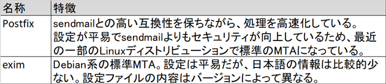
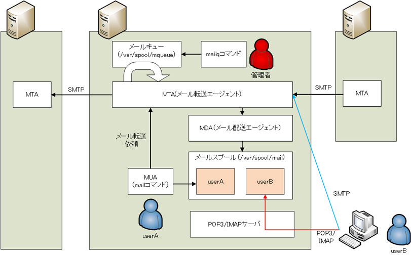
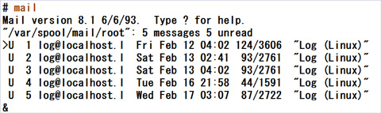
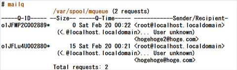
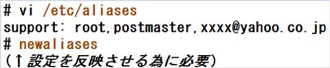
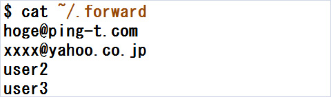

- 問題ID : 15530 メール配送エージェント(MTA)の基本
- 履歴
次のうちMTAはどれか（2つ選択）
正解
exim
postfix
解説
MTA(Message Transfer Agent)は、メールの配送を行うソフトウェアの総称です。メールサーバとして使用されます。
代表的な各メールサーバ（MTA）の特徴

上表より正解は
・exim
・postfix
です。
その他の選択肢については、以下の通りです。
・OpenSSH
オープンソースのSSH実装のソフトウェアのため、誤りです。
・IPP
ネットワーク上のプリンタをサポートするプロトコルのため、誤りです。
参考
電子メールの送受信においては、以下の図のように複数の機能が連携して動作しています。

・MTA（Mail Transfer Agent）：メールの転送を行うプログラム。ネットワーク経由、またはサーバ内部（ローカル）のメール転送依頼に基づき、指定された宛先へメールを転送する。
・MDA（Mail Delivery Agent）：ローカルのメールスプールへ配送するプログラム。MTAによってローカルの宛先へのメールであると判断されたメールを受け取り、宛先ユーザのメールボックス（メールスプール）へメールを配送する。
・ MUA（Mail User Agent）：ユーザーがメールを扱うプログラム。自身のメールボックスへアクセスして受信したメールを閲覧したり、メールを送信したりする。MUAの例 としては、LinuxのmailコマンドやThunderbird、WindowsやMac OS X付属のメールソフトがある。
代表的なMTAとその特徴は以下のとおりです。
MTA は外部からのネットワーク経由でのメール転送依頼や、サーバ内部でのメール転送依頼を受け取り、メールキューに格納します。その後、メールキューから順に メールを転送していきます。宛先が外部の受信者であれば適切な外部のメールサーバに転送し、内部の受信者であればMDAに転送します。
MDA は宛先ユーザ名を確認し、当該ユーザのメールスプールへ配送します。ユーザは自身のメールスプールへMUAを使ってアクセスします。また、外部のコン ピュータ上のMUAからメールスプールを参照する事もできます。その場合、POP3やIMAPといったメール受信用のプロトコルでメールスプールにアクセ スするために、サーバプログラムのインストールや設定が別途必要になる場合があります。
mailコマンドでの表示例：

外部のメールサーバへの接続や、ローカルユーザのメールスプールが空き容量不足で配信できないなどの理由でメールが転送できない事があります。そのような場合、管理者はメールキューにメールが溜まっているかをmailqコマンドで確認します。
メールキューにメールが溜まっていると、mailqコマンドで以下のように表示されます。

MTA には、ローカル宛として扱う宛先を実際のユーザとは異なる別名で作成し、受信した宛先とは異なる複数のユーザーや外部の受信者宛に転送する機能がありま す。例えば、webadmin宛のメールをuserAとuserB宛の複数のメールとして扱ったり、外部のアドレスに転送することができるようになりま す。
Postfixでは別名（エイリアス）を「/etc/aliases」に記載し、newaliasesコマンドで別名をPostfixに認識させることで、メール転送を有効化することができます。
「/etc/aliases」には以下の書式で別名を登録します。複数の宛先を指定する場合はカンマで区切って指定します。
別名:転送先（メールアドレスやアカウント）[,転送先（メールアドレスやアカウント）,転送先（メールアドレスやアカウント）...]
以下は「/etc/aliases」の設定例です。

「/etc /aliases」はMTAに対する設定のため、各ユーザが個別にメール転送する目的には使用できません。各ユーザごとのメール転送設定は、ホームディレ クトリの「.forward」ファイルを使用します。「~/.forward」ファイルには別名を使用することはできませんが、そのユーザ宛に届いたメー ルを異なる複数のユーザーや外部の受信者宛に転送する事ができます。転送先が複数ある場合は、改行で区切って指定します。
なお、「~/.forward」ファイルの設定変更は即時有効になります。
以下は「~/.forward」ファイルの設定例です。
